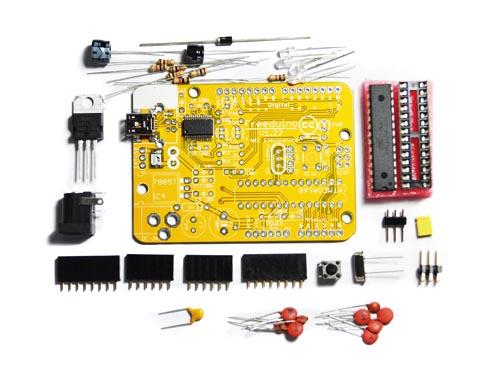
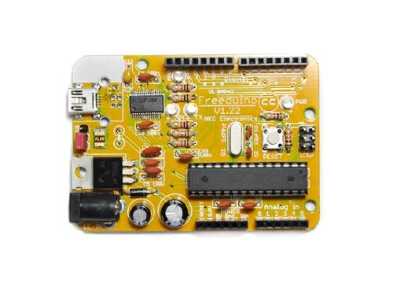

Freeduino USB complete Kit includes all the kits needed to assemble Freeduino. And now the Freeduino USB Kit comes with a mini USB-B connector pre-soldered to the PCB and the Atmega 328 microcontroller.
Model:ARD107B1P

Arduino is an open-source physical computing platform based on a simple I/O board and a development environment that implements the Processing/Wiring language.? Arduino can be used to develop stand-alone interactive objects or can be connected to software on your computer.?the open-source IDE can be downloaded for free (currently for Mac OS X, Windows, and Linux).
Arduino received an Honory Mention in the Digital Communities section of the 2006 Ars Electronica Prix. Some new features available in Arduino diecimila, implemented in this Freeduino (Arduino compatible) board:
The FT232RL chip is pre-soldered, eliminating the most difficult component to solder. The rest of the components are easy to solder through-hole. We also switched from metal film 1% resistors to standard resistors for easier value reading for novice users.
You only need a soldering iron, some solder, a multimeter and soldering skills.
Assembled View

The warnings and wrong operations possible cause dangerous.
It is the schematic, the circuit about Eagle resource like .pdf should linked here in order to avoid memory exhausted.
May include key specification and other specifications.
1) /Bareminimum Structure/
void_setup()
{
}
void_loop()
{
}
2) /Programming Structure/
void_setup()
{
<executed once>
}
void_loop()
{
<executed infinitely>
}
The projects and application examples.
All the components used to produce the product.
Please list your question here:
If you have questions or other better design ideas, you can go to our forum or wish to discuss.
| Revision | Descriptions | Release |
|---|---|---|
| v1.0 | Initial public release | Aug 13, 2009 |
Bug Tracker is the place you can publish any bugs you think you might have found during use. Please write down what you have to say, your answers will help us improve our products.
The Additional Idea is the place to write your project ideas about this product, or other usages you've found. Or you can write them on Projects page.
Click here to buy : http://www.seeedstudio.com/depot/freeduino-usb-complete-kit-p-58.html?cPath=132_133.
Other related products and resources.
This documentation is licensed under the Creative Commons Attribution-ShareAlike License 3.0 Source code and libraries are licensed under GPL/LGPL, see source code files for details.
Links to external webpages which provide more application ideas, documents/datasheet or software libraries
Copyright (c) 2008-2016 Seeed Development Limited (www.seeedstudio.com / www.seeed.cc)